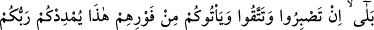

125. Evet, siz sabır gösterir ve Allah’dan sakınırsanız, onlar (düşmanlarınız)
hemen şu anda üzerinize gelseler; Rabbiniz, nişanlı beş bin melekle sizi takviye
eder.
Buradaki “belâ ” lâfzı, önceki âyetteki “len ” lâfzından sonraki bölüme
müsbet bir cevap olup, bunun gerçek olduğunu belirtmektedir. Allah’ın bu yardımı size
yeter, demektir. Allah Teâlâ, bunu belirttikten sonra, mü’minlerin kalbini rahatlatmak ve
sabır ve takvâya teşvik etmek için sabır ve takvâ şartıyla bu yardımı daha da
artıracağını şöyle beyân ediyor: Düşmanla karşılaşmaya ve düşman karşısında
mukâvemet etmeye sabreder; Allah’a isyan etmekten ve Hz. Peygamber (s.a.)’e karşı
gelmekten korunursanız, müşrikler hemen şu dakikada üzerinize gelseler, Rabbiniz size
işâretlenmiş beş bin melek indirir.
Buradaki ( ) kelimesi, bir şeyin simâsını belli etmek anlamındaki ( ) den
türemedir. O zaman “müsevvimîn”: Kendilerini ya da atlarını kuyruklarında ve
perçemlerinde beyaz yünden işaret bulundurarak tanıtan demektir. Yani müşrikler
üzerinize gelir gelmez melekler de hiç gecikmeden hemen yardımınıza gelir. Allah
Teâlâ: Sabreder, korunursanız zaferi hemen müyesser kılacağını, fethi kolaylaştıracağını
anlatmak istiyor.
Hz. Peygamber (s.a.), ashâb-ı kirâm’a: “Kim olduğunuzu belli ediniz. Çünkü
Melekler de kendilerini belli etmişlerdir.” buyurmuştur.[107]
Rivâyet edilir ki: Cebrâil (a.s.) dışında bütün melekler, beyaz sarık sarmış vaziyette
gelmişler, Cebrâil (a.s.) ise, Zübeyr b. Avvâm (r.a.) gibi sarı sarıkla gelmişti. O gün
bütün melekler, Mikdâd b. Esved (r.a.)’in atına uygun olarak alaca atlara binmişlerdi.
126. Allah, bunu size sırf bir müjde olsun ve kalpleriniz bu sâyede rahatlasın diye
yaptı. Zafer, yalnızca mutlak güç ve hikmet sahibi Allah katındandır.
“Allah bunu” melek indirmek sûretiyle yaptığı bu yardımı, size herhangi bir şey
göstermek için değil, sırf “zafere ulaşacaksınız” diyerek “sırf size müjde olsun ve
kalpleriniz bununla” yani bu yardımla “güven bulsun” ve İsrâiloğulları’na sükûn ihsan
edildiği gibi, sizin korkunuz da yok olsun “diye yaptı. “Yardım; yalnız azîz ve hikmet
sahibi” yani verdiği hiçbir hüküm geri çevrilemeyen ve yaptığı her şeyi bir hikmet ve
maslahata mebnî yapan “Allah katındandır.” Sayı ve techizat üstünlüğünden değil.